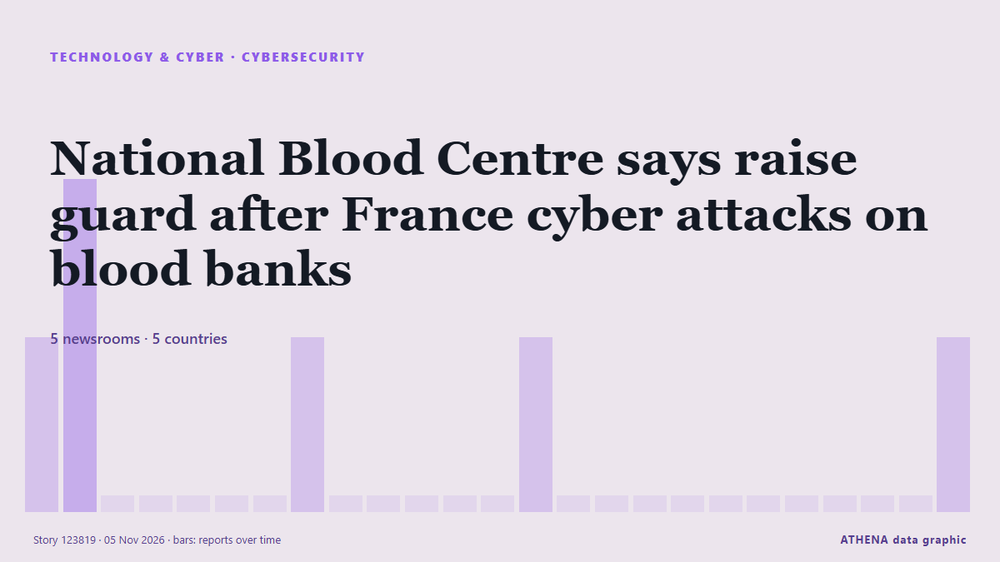

Ciberseguridad
PatrocinadoPresentado por  Cybernetics and Artificial Intelligence Lab Welcome to the Cybernetics and Artificial Intelligence Laboratory, established at the Department of Business Administration of the National and Kapodistrian University of Athens. The lab is headed by Professor Dimitrios Thomakos. The lab aims to do research that can be published in top venues. Our research uses tools and methods of Artificial Intelligence, and lies in the following areas: - Forecasting - Decision making - Cyber security - Finance We are always looking forward to collaborating with exceptional students!
Cybernetics and Artificial Intelligence Lab Welcome to the Cybernetics and Artificial Intelligence Laboratory, established at the Department of Business Administration of the National and Kapodistrian University of Athens. The lab is headed by Professor Dimitrios Thomakos. The lab aims to do research that can be published in top venues. Our research uses tools and methods of Artificial Intelligence, and lies in the following areas: - Forecasting - Decision making - Cyber security - Finance We are always looking forward to collaborating with exceptional students!
| 23 oct | 0 |
|---|---|
| 24 oct | 0 |
| 25 oct | 0 |
| 26 oct | 0 |
| 27 oct | 0 |
| 28 oct | 0 |
| 29 oct | 1 |
| 30 oct | 1 |
| 31 oct | 2 |
| 1 nov | 3 |
| 2 nov | 9 |
| 3 nov | 4 |
| 4 nov | 3 |
| 5 nov | 1 |
Los titulares se muestran en inglés, tal como se publicaron.

National Blood Centre says raise guard after France cyber attacks on blood banks
(ANSA) - ROME, 04 NOV - Italy's National Blood Centre on Wednesday called on Italian blood banks to raise their level of vigilance following cyber attacks in France that targeted the refrigeration… de ANSA English
British adventurer Karl Bushby completes 28-year walk around the world
On November 2, Karl Bushby finished his 28-year walk back to his English hometown of Hull. de NBC News (World)
Cyberattack hits French blood banks
Three blood banks have detected and reversed a potentially destructive temperature spike in their cold rooms, following a cyberattack that targeted a refrigeration equipment provider of the French… de Help Net Security
Google dismantles botnet secretly running on 1.3 million Android TV boxes
Google has cut ties with the company behind the botnet campaign. de Ars Technica
UK Must Expect AI-Powered Attack on Critical Infrastructure Within Two Years: Report
Britain should be prepared for an AI-powered cyberattack on its critical national infrastructure in the next two years, the UK’s National Cyber Security Centre said on Tuesday, adding that China was… de Insurance Journal
Here's what to know about another cyberattack on European supermarket fridges
Experts say outdated technology and weak passwords are to blame. de PBS NewsHour
European supermarkets rush to patch vulnerabilities after region-wide fridge hack
EU cybersecurity agency says attacks underscore importance of European cooperation, rapid information-sharing. de Express Tribune
Supermarket freezers in several European countries hit by apparent cyberattacks
Supermarkets in Sweden, Belgium, Luxembourg, Ireland and Estonia were hit Monday by problems with freezers and fridges that apparently were caused by cyberattacks, forcing some to dispose of ruined… de The Canadian Press (via CityNews)
Europe on alert after supermarket freezers hit by cyber-attacks in 10 countries
Supermarkets have reported problems from Estonia and Sweden to Portugal and Italy and many retainers have been forced to discard food. de BBC News
Fridge cyberattack hits supermarkets across Europe
Grocery stores in at least five European countries saw temperatures in their cold cases soar on Monday, with several confirming they had been hit by a cyberattack similar to one three weeks ago in… de Dawn
Germany Says Lawmakers’ Phones May Be Hacked By Spyware
Apple sent threat alerts to German MPs and officials, and Berlin says affected iPhones should be treated as compromised in a suspected state-backed attack. de to vima
Greek butcher shop reports cyberattack targeting refrigeration systems
Hackers allegedly gain access to refrigeration control system, set the temperature to 302F. de Anadolu Agency (English)
Suspected cyberattack sends Swedish supermarket freezers to 50C
The temperature of freezers at several Swedish grocery stores rose sharply overnight, operators ICA and Coop said on Monday, with at least one store blaming the incident on a cyberattack. de Cyprus Mail
'Noticeable' spike in Dunedin car thieves targeting Subaru vehicles
Police say there is little or no sign of forced entry in many cases, and offenders are instead exploiting known vulnerabilities in some vehicle models. de RNZ National
Hackers hit Ukraine, Russia's emergency apps, send fake nuclear, chemical attack alerts
All-clear messages were sent shortly afterward for each alert, and Ukraine's Ministry for Digital Transformation said the app had been temporarily suspended. de The Jerusalem Post
Russian bomb attack on aid centre kills 26, says Ukraine
Russia bombed an aid distribution centre and neighbouring shelter in southern Ukraine, killing 26 people, Ukraine's emergency services agency said. de RTÉ News
ClassNK updates ship cyber security guidelines to simplify compliance
ClassNK has released the second edition of its Guidelines for Cyber Security Management System for Ships, introducing clearer audit requirements and closer alignment with international cyber security… de Container News
Ukrainian air raid alert app sends false warnings after being hacked
The app has sent Ukrainians false warnings that some areas of the country face nuclear and chemical threats. de ABC News Australia